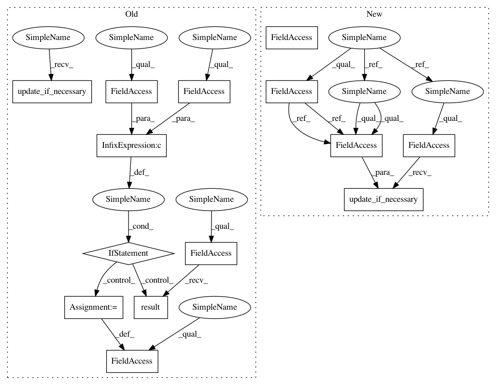

678f40aa5244d57280310f9421b9ba0727241fbc,chainerrl/agents/ddpg.py,DDPG,act_and_train,#DDPG#Any#Any#,285
Before Change
self.logger.debug("t:%s r:%s", self.t, reward)
if self.async_update and self.update_future:
self.update_future.result()
self.update_future = None
if self.clip_reward:
reward = np.clip(reward, -1, 1)
greedy_action = self.act(state)
action = self.explorer.select_action(self.t, lambda: greedy_action)
self.t += 1
// Update the target network
if self.t % self.target_update_frequency == 0:
self.sync_target_network()
if self.last_state is not None:
assert self.last_action is not None
// Add a transition to the replay buffer
self.replay_buffer.append(
state=self.last_state,
action=self.last_action,
reward=reward,
next_state=state,
next_action=action,
is_state_terminal=False)
self.last_state = state
self.last_action = action
self.update_if_necessary()
return self.last_action
def update_if_necessary(self):
After Change
actor_loss += self.compute_actor_loss(batch)
self.actor_optimizer.update(lambda: actor_loss / max_epi_len)
def act_and_train(self, state, reward):
self.logger.debug("t:%s r:%s", self.t, reward)
if self.clip_reward:
reward = np.clip(reward, -1, 1)
greedy_action = self.act(state)
action = self.explorer.select_action(self.t, lambda: greedy_action)
self.t += 1
// Update the target network
if self.t % self.target_update_frequency == 0:
self.sync_target_network()
if self.last_state is not None:
assert self.last_action is not None
// Add a transition to the replay buffer
self.replay_buffer.append(
state=self.last_state,
action=self.last_action,
reward=reward,
next_state=state,
next_action=action,
is_state_terminal=False)
self.last_state = state
self.last_action = action
self.replay_updator.update_if_necessary(self.t)
return self.last_action
def act(self, state):
In pattern: SUPERPATTERN
Frequency: 3
Non-data size: 14
Instances
Project Name: chainer/chainerrl
Commit Name: 678f40aa5244d57280310f9421b9ba0727241fbc
Time: 2017-02-08
Author: muupan@gmail.com
File Name: chainerrl/agents/ddpg.py
Class Name: DDPG
Method Name: act_and_train
Project Name: chainer/chainerrl
Commit Name: 678f40aa5244d57280310f9421b9ba0727241fbc
Time: 2017-02-08
Author: muupan@gmail.com
File Name: chainerrl/agents/ddpg.py
Class Name: DDPG
Method Name: act_and_train
Project Name: chainer/chainerrl
Commit Name: 678f40aa5244d57280310f9421b9ba0727241fbc
Time: 2017-02-08
Author: muupan@gmail.com
File Name: chainerrl/agents/dqn.py
Class Name: DQN
Method Name: act_and_train
Project Name: chainer/chainerrl
Commit Name: 678f40aa5244d57280310f9421b9ba0727241fbc
Time: 2017-02-08
Author: muupan@gmail.com
File Name: chainerrl/agents/pgt.py
Class Name: PGT
Method Name: act_and_train